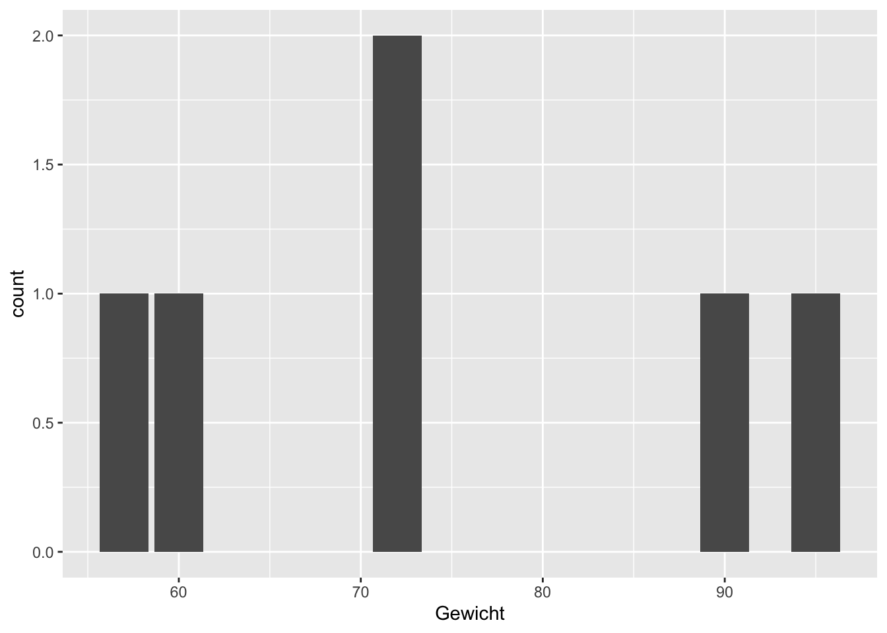
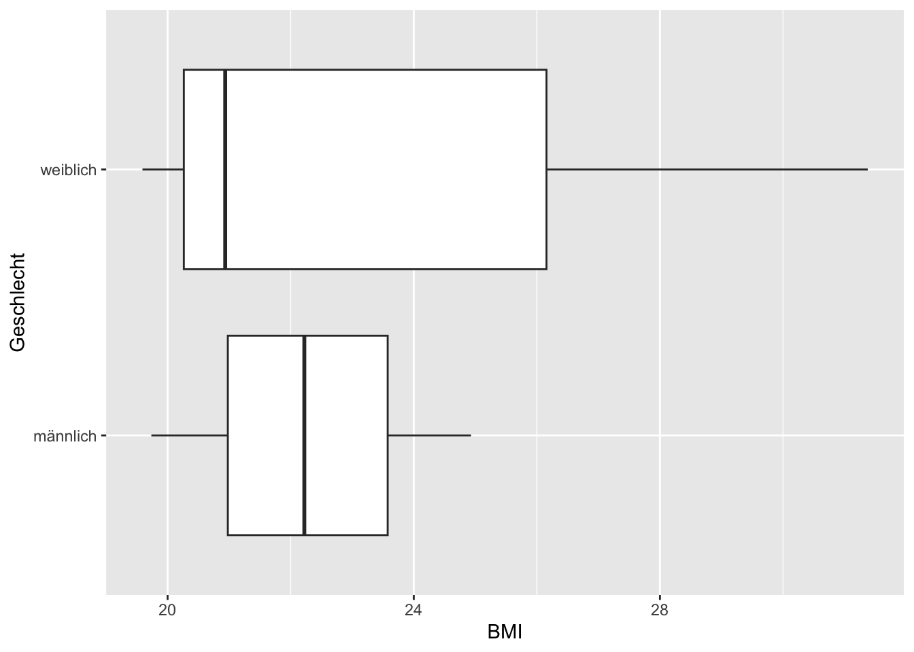
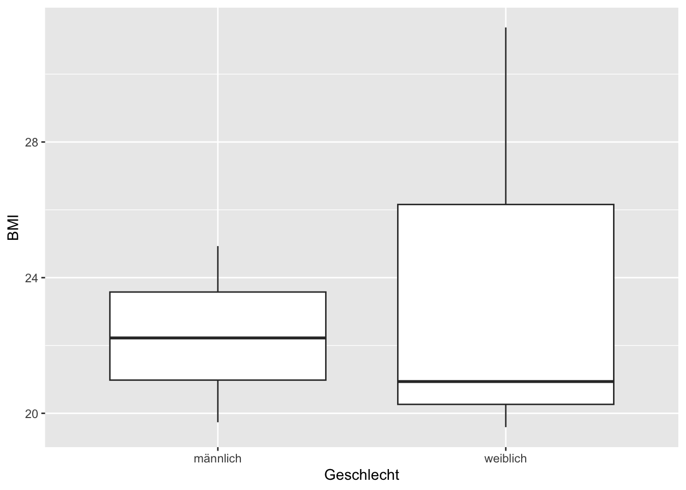
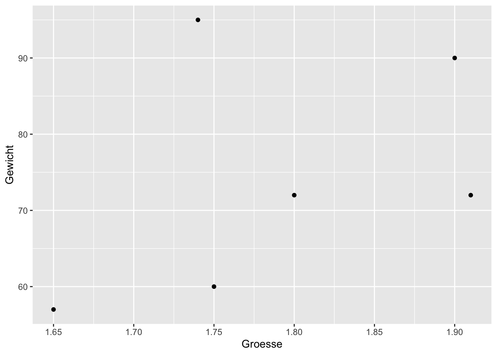
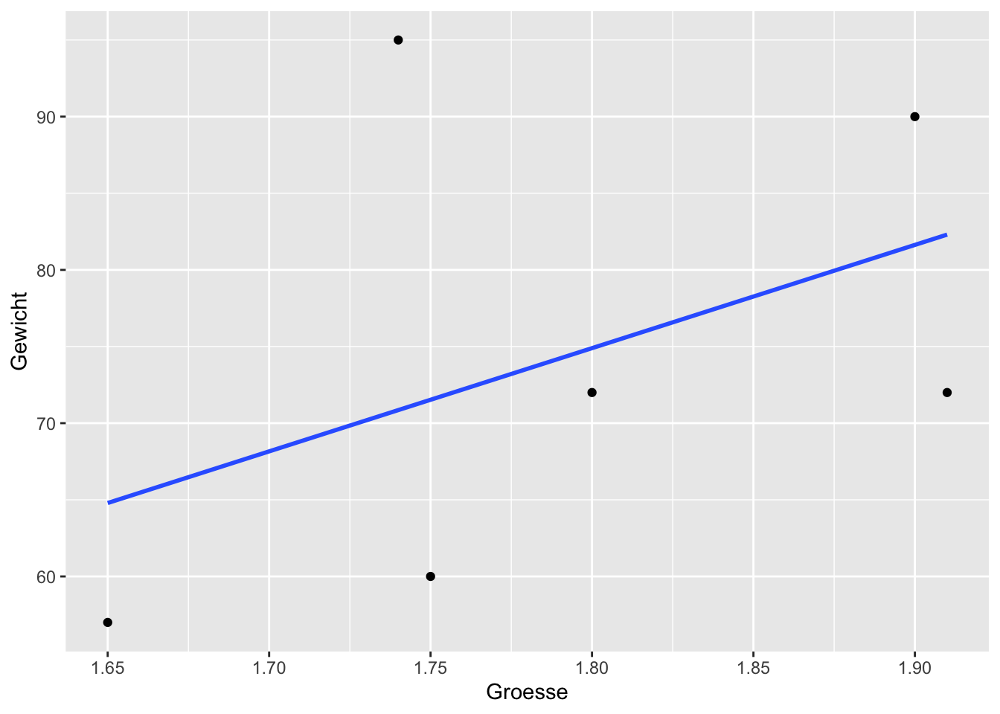
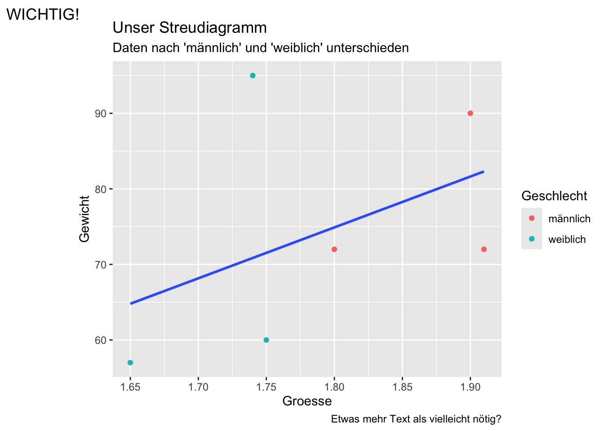

x <- c(1, 2, 3, 9, 8, 7)
y <- c(10, 2.3, 4.5, 6.7, -1.2, -9.0)
x
y
mean(x)
median(y)
x+y
z <- x*y
zR die Geschichte in kurz (I/II)
Die Geschichte von R als Programmiersprache begann 1992 an der Universität Auckland in Neuseeland.
R wurde von den Statistikern Ross Ihaka und Robert Gentleman entwickelt.
Sie orientierten sich dabei stark an der Programmiersprache S, die in den Bell Laboratories in den 1970er Jahren entstanden war und für statistische Datenverarbeitung genutzt wurde.
R kann als freie Implementierung von S angesehen werden, wobei viele Programme für S auch mit R kompatibel sind.
Der Name „R“ leitet sich von den Anfangsbuchstaben der Vornamen der Entwickler Ross und Robert ab, gleichzeitig als Anspielung auf die Sprache S.
R die Geschichte in kurz (II/II)
Die Motivation für die Entwicklung von R lag in der Verbesserung bestimmter Eigenschaften von S, wie etwa der Speicherverwaltung und der Flexibilität bei der Implementierung neuer analytischer Verfahren.
Für den Anfang wurde der Interpreter auf Basis von Scheme entwickelt, geschrieben wurde R in C, Fortran und der eigenen Sprache R.
Die Sprache wurde erstmals 1993 öffentlich zugänglich gemacht und seit 1995 unter der GNU General Public License als freie Software verbreitet.
Ein wichtiges Ereignis war 1997 die Gründung des R Development Core Teams sowie die Einrichtung des Comprehensive R Archive Network (CRAN), einer zentralen Plattform für Pakete und Erweiterungen.
R hat sich seitdem zu einer Standardprogrammiersprache für statistische Analysen entwickelt und wird weltweit in Wissenschaft und Wirtschaft eingesetzt.
Die Sprache bietet eine breite Palette an statistischen Methoden und Möglichkeiten zur grafischen Visualisierung und wird von einer großen Community stetig weiterentwickelt.
Noch ein paar Meilensteine in der Entwickliung
Bis 2010 prägten mehrere Meilensteine die Entwicklung der Programmiersprache R:
1997: Gründung von CRAN (Comprehensive R Archive Network) als zentrale Plattform für Pakete und Erweiterungen, die es Anwendern ermöglicht, selbst geschriebene Funktionen einfach zu teilen und damit die Verbreitung und Nutzung von R erheblich zu fördern.
2000: Veröffentlichung von R Version 1.0, der ersten stabilen Version von R, die wichtige Funktionen wie Fehlerbehandlung (try()), Datenrahmenbearbeitung (by(), merge()) enthielt.
2001: Gründung von Bioconductor, ein Open-Source-Projekt für Genomdatenanalysen, das neben CRAN über 2000 weitere Pakete bereitstellt.
2007: Veröffentlichung von ggplot2, einem Paket basierend auf der Grammar of Graphics von Leland Wilkinson, entwickelt von Hadley Wickham. Dieses Paket revolutionierte die grafische Darstellung in R und wurde zu einem zentralen Bestandteil der R-Community und später des tidyverse.
2009: Einführung des R Journals, das die R News ersetzte und als Fachjournal Themen rund um R-Abdeckte, z. B. Erweiterungspakete, Reviews und Anwendungen.
2014: Das Paket dplyr mit seinen modernen Datenmanipulationsfunktionen wurde veröffentlicht. Eines der einflussreichsten Pakete im R-Ökosystem.
Diese Meilensteine zeigen eine kontinuierliche Verbesserung von R bezüglich Stabilität, Erweiterbarkeit und Benutzerfreundlichkeit.
Unser erstes R, ein R-Skript
Wir beginnen in dem wir uns in posit.cloud ein R-Skript Dokument erstellen und gemeinsam einige Schritte durch gehen um unser erstes (gemeinsames) R zu programmieren.
Wir beginnen mit den folgenden Zeilen:
Beachten Sie: Zuweisungen an eine Variable erfolgen durch “<-” oder “->”! An der Pfeilspitze steht immer die Variabel, auf der anderen Seite das, was sie Zuweisen wollen!
Was passiert, wenn wir das in R ausführen?
Wir erhalten die folgende Ausgabe:
[1] 1 2 3 9 8 7[1] 10.0 2.3 4.5 6.7 -1.2 -9.0[1] 5[1] 3.4[1] 11.0 4.3 7.5 15.7 6.8 -2.0[1] 10.0 4.6 13.5 60.3 -9.6 -63.0Wir machen etwas einfache Statistik
Zu nächst bauen wir von Hand ein paar Daten auf, dazu erzeugen wir zwei Vektoren mit dem combine-Befehl c():
Gewicht <- c(60, 72, 57, 90, 95, 72)
Groesse <- c(1.75, 1.80, 1.65, 1.90, 1.74, 1.91)Jetzt können wir den BMI (also den Body Mass Index) einfach berechnen:
BMI <- Gewicht / Groesse^2
BMI[1] 19.59184 22.22222 20.93664 24.93075 31.37799 19.73630Noch ein paar Zeilen
Den Mittelwert können wir, quasi von Hand, berechnen in dem wir die Summe durch die Anzahl teilen:
sum(Gewicht)[1] 446length(Gewicht)[1] 6sum(Gewicht) / length(Gewicht)[1] 74.33333Es gibt aber auch den Befehl mean() dafür:
mean(Gewicht)[1] 74.33333Noch ein paar weitere Zeilen
Die Standardabweichung ist die Wurzel der Varianz, welches wiederum die durchschnittliche Summe der quadratischen Abweichungen vom Mittelwert ist:
mittelwert <- sum(Gewicht) / length(Gewicht)
Gewicht - mittelwert[1] -14.333333 -2.333333 -17.333333 15.666667 20.666667 -2.333333sqrt((sum((Gewicht - mittelwert)^2))/(length(Gewicht)-1))[1] 15.42293Aber auch hierfür gibt es einfachere Befehle:
sqrt(var(Gewicht))[1] 15.42293Oder noch kürzer mit dem Befehl sd() ( sd = standard derivation, zu deutsch Standardabweichung ):
sd(Gewicht)[1] 15.42293Unsere erste Tabelle
Normalerweise werden in R Datenrahmen (data.frame) zur Speicherung von Tabellen benutzt.
Wir nutzen hier aber tibbles aus dem Paket tibble. Es sind im Prinzip Datenrahmen nur etwas moderner implementiert:
library(tibble)
tib <- tibble(
Gewicht = Gewicht,
Groesse = Groesse
)
tib# A tibble: 6 × 2
Gewicht Groesse
<dbl> <dbl>
1 60 1.75
2 72 1.8
3 57 1.65
4 90 1.9
5 95 1.74
6 72 1.91Bitte beachten Sie: Parameterzuweisungen, also Zuweisungen innerhalb von Funktionsaufrufen, erfolgen mit “=”!
Die Struktur einer Tabelle
Um auch in Skripten die Struktur einer Tabelle darstellen zu können nutzen wir den Befehl str():
str(tib)tibble [6 × 2] (S3: tbl_df/tbl/data.frame)
$ Gewicht: num [1:6] 60 72 57 90 95 72
$ Groesse: num [1:6] 1.75 1.8 1.65 1.9 1.74 1.91Oder auch moderner mit dem Befehl glimpse():
glimpse(tib)Rows: 6
Columns: 2
$ Gewicht <dbl> 60, 72, 57, 90, 95, 72
$ Groesse <dbl> 1.75, 1.80, 1.65, 1.90, 1.74, 1.91Unterschied zu Datenrahmen?
Hätten wir die im R normalerweise implementierten Datenrahmen (data.frames) benutzt hätten wir das folgende Ergebnis:
df <- data.frame(
Gewicht = Gewicht,
Groesse = Groesse
)
df Gewicht Groesse
1 60 1.75
2 72 1.80
3 57 1.65
4 90 1.90
5 95 1.74
6 72 1.91str(df)'data.frame': 6 obs. of 2 variables:
$ Gewicht: num 60 72 57 90 95 72
$ Groesse: num 1.75 1.8 1.65 1.9 1.74 1.91glimpse(tib)Rows: 6
Columns: 2
$ Gewicht <dbl> 60, 72, 57, 90, 95, 72
$ Groesse <dbl> 1.75, 1.80, 1.65, 1.90, 1.74, 1.91Für uns als Nutzer:in sind diese beiden Datentabellenarten (annähernd) gleich zu benutzen.
Umwandeln von tibble nach data.frame und zurück
Wir können wie folgend zwischen den beiden Datentypen umwandeln:
str(as_tibble(df))tibble [6 × 2] (S3: tbl_df/tbl/data.frame)
$ Gewicht: num [1:6] 60 72 57 90 95 72
$ Groesse: num [1:6] 1.75 1.8 1.65 1.9 1.74 1.91str(as.data.frame(tib))'data.frame': 6 obs. of 2 variables:
$ Gewicht: num 60 72 57 90 95 72
$ Groesse: num 1.75 1.8 1.65 1.9 1.74 1.91Unsere erste Graphik
Für Grafiken wollen wir ggplot aus dem Paket ggplot2 benutzen. Dafür müssen wir zunächst das Paket laden:
library(ggplot2)Nun wollen wir ein Säulendiagramm erstellen:
ggplot(data = tib, # Woher die Daten?
mapping = aes(x = Gewicht)) + # Was kommt wohin?
geom_bar() # Was soll damit gemacht werden?
Oder etwas kompakter:
ggplot(tib, aes(x = Gewicht)) + geom_bar()Die Kennzahlen
Die Kennzahlen erhalten wir z.B. wie folgt:
table(tib$Gewicht)
57 60 72 90 95
1 1 2 1 1 table(tib$Groesse)
1.65 1.74 1.75 1.8 1.9 1.91
1 1 1 1 1 1 Aufgabe
Erzeugen sie eine neue Tabelle mit dem Namen tib2, welche die Spalten Groesse, Gewicht und BMI enthält.
Geben Sie die Mittelwerte aller drei Spalten aus.
Geben Sie ein Säulendiagramm des BMI an.
Spalten zu Tabellen hinzufügren mit `mutate()```
Wir nutzen dazu das Paket dplyr und den Befehl mutate():
library(dplyr)
Attaching package: 'dplyr'The following objects are masked from 'package:stats':
filter, lagThe following objects are masked from 'package:base':
intersect, setdiff, setequal, uniontib |> mutate(BMI = Gewicht / Groesse^2) -> tib2
head(tib2)# A tibble: 6 × 3
Gewicht Groesse BMI
<dbl> <dbl> <dbl>
1 60 1.75 19.6
2 72 1.8 22.2
3 57 1.65 20.9
4 90 1.9 24.9
5 95 1.74 31.4
6 72 1.91 19.7tib2 |> mutate(Geschlecht = rep(c("weiblich", "männlich"), 3)) -> tib3Geben wir nun einen Boxplot aus
Wir nutzen nun die Tabelle tib3 um Boxplot auszugeben:
tib3 |> ggplot(aes(x = BMI, y = Geschlecht)) + geom_boxplot()
oder:
tib3 |> ggplot(aes(x = Geschlecht, y = BMI)) + geom_boxplot()
Aufgabe
Nutzen Sie die Tabelle tib3 und erstellen Sie einen Boxplot für die Varable BMI.
Nutzen Sie die Tabelle tib3 und erstellen Sie einen Boxplot für die Variable BMI, aber nach Geschlechtern getrennt!
Streudiagramme
Zur Darstellung von (vermuteten) Zusammenhängen zweier numerischer Variablen nutzen wir Streudiagramme (engl. Scatterplot, hier mittel dem Geom: geom_point:
tib3 |>
ggplot(aes(x = Groesse, y = Gewicht)) +
geom_point()
Der Korrellationkoeffizent berechnet sich zu:
cor(tib3$Groesse, tib3$Gewicht)[1] 0.437934Eine lineare Regression scheint keine schlechte Idee zu sein.
Eine lineare Regression
linreg <- lm(Gewicht ~ Groesse, data = tib3)
linreg
Call:
lm(formula = Gewicht ~ Groesse, data = tib3)
Coefficients:
(Intercept) Groesse
-46.34 67.35 Eine etwas ausführlichere Darstellung erhalten wir mittels des Befehls summary():
summary(linreg)
Call:
lm(formula = Gewicht ~ Groesse, data = tib3)
Residuals:
1 2 3 4 5 6
-11.527 -2.895 -7.792 8.370 24.147 -10.303
Coefficients:
Estimate Std. Error t value Pr(>|t|)
(Intercept) -46.34 124.02 -0.374 0.728
Groesse 67.35 69.13 0.974 0.385
Residual standard error: 15.5 on 4 degrees of freedom
Multiple R-squared: 0.1918, Adjusted R-squared: -0.01027
F-statistic: 0.9492 on 1 and 4 DF, p-value: 0.3851Eine Grafik dazu
Wir können nun diese Regressiongrade in unsere Grafik einbauen:
tib3 |>
ggplot(aes(x = Groesse, y = Gewicht)) +
geom_point() +
geom_smooth(method = lm, se=FALSE, formula = y ~ x)
Ein kleiner Ausblick
tib3 |>
ggplot(aes(x = Groesse, y = Gewicht, color = Geschlecht)) +
geom_point() +
geom_smooth(
mapping = aes(x = Groesse, y = Gewicht),
inherit.aes = FALSE,
method = lm,
se=F,
formula = y ~ x) +
labs(
title = "Unser Streudiagramm",
subtitle = "Daten nach 'männlich' und 'weiblich' unterschieden",
caption = "Etwas mehr Text als vielleicht nötig?",
tag = "WICHTIG!"
)
Tabellen und das Dollarzeichen
Intern speichert R Tabellen Spalten und nicht, wie zum Beispiel die meisten relationalen Datenbanken, Zeilenweise.
Das ermöglicht auf der einen Seite schnellen Zugriff aus einzelne Spalten:
tib$Gewicht. # Ergebnis ein Vektor mit den Daten aus der Spalte GewichtWarning: Unknown or uninitialised column: `Gewicht.`.NULLtib["Gewicht"] #. Eine Tabelle mit nur den Einträgen aus der Spalte Gewicht# A tibble: 6 × 1
Gewicht
<dbl>
1 60
2 72
3 57
4 90
5 95
6 72Spalten und Zeilen in R
tib[1] # Liefert die erste Spalte!# A tibble: 6 × 1
Gewicht
<dbl>
1 60
2 72
3 57
4 90
5 95
6 72tib[1, ] # Liefert die erste Zeile!# A tibble: 1 × 2
Gewicht Groesse
<dbl> <dbl>
1 60 1.75Spalten und Zeilen auswählen mit dem Paket dplyr
tib3 |> select(Geschlecht) # Als Spalte einer Tabelle# A tibble: 6 × 1
Geschlecht
<chr>
1 weiblich
2 männlich
3 weiblich
4 männlich
5 weiblich
6 männlich tib3 |> select(Geschlecht) |> c() # Als Vektor$Geschlecht
[1] "weiblich" "männlich" "weiblich" "männlich" "weiblich" "männlich"tib3 |> filter(Geschlecht == "männlich")# A tibble: 3 × 4
Gewicht Groesse BMI Geschlecht
<dbl> <dbl> <dbl> <chr>
1 72 1.8 22.2 männlich
2 90 1.9 24.9 männlich
3 72 1.91 19.7 männlich Etwas komplizierter
Wir wollen eine Zusammenfassung (eng. summarise) bei den Männern erstellen. Dabei geben wir die Anzahl (n), den Mittelwert des Gewichts (mean) und den Median der Größe (median) an:
tib3 |>
filter(Geschlecht == "männlich") |>
select(Gewicht, Groesse) |>
summarise(n = n(), mean = mean(Gewicht), median = median(Groesse))# A tibble: 1 × 3
n mean median
<int> <dbl> <dbl>
1 3 78 1.9Gruppieren
Mit dem Befehl group_by() können wir kategoriale Variablen (also Spalten) nutzen um einzelne Fälle (also Kategorien) zu unterscheiden:
tib3 |>
group_by(Geschlecht) |>
summarise(
Anzahl = n(),
Mittelwert = mean(Gewicht),
Standardabw. = sd(Gewicht)
)# A tibble: 2 × 4
Geschlecht Anzahl Mittelwert Standardabw.
<chr> <int> <dbl> <dbl>
1 männlich 3 78 10.4
2 weiblich 3 70.7 21.1Daten aus einer Datei einlesen (CSV-Version)
Zum Einlesen einer CSV Datei nutzen wir aus dem Paket readr den Befehle `read_csv()
library(here)
library(readr)
here("data", "tips.csv") |> read_csv() -> tips_csvspec(tips_csv)cols(
total_bill = col_double(),
tip = col_double(),
sex = col_character(),
smoker = col_character(),
day = col_character(),
time = col_character(),
size = col_double()
)Daten aus einer Datei einlesen (CSV2-Version)
Zum Einlesen einer CSV Datei nutzen wir aus dem Paket readr den Befehle read_csv2():
library(here)
library(readr)
here("data", "tips.csv2") |> read_csv2() -> tips_csv2spec(tips_csv2)cols(
total_bill = col_character(),
tip = col_character(),
sex = col_character(),
smoker = col_character(),
day = col_character(),
time = col_character(),
size = col_character()
)Vergleich
Wir erhalten damit die selben Inhalte:
glimpse(tips_csv)Rows: 94
Columns: 7
$ total_bill <dbl> 16.99, 10.34, 21.01, 23.68, 24.59, 25.29, 8.77, 26.88, 15.0…
$ tip <dbl> 1.01, 1.66, 3.50, 3.31, 3.61, 4.71, 2.00, 3.12, 1.96, 3.23,…
$ sex <chr> "Female", "Male", "Male", "Male", "Female", "Male", "Male",…
$ smoker <chr> "No", "No", "No", "No", "No", "No", "No", "No", "No", "No",…
$ day <chr> "Sun", "Sun", "Sun", "Sun", "Sun", "Sun", "Sun", "Sun", "Su…
$ time <chr> "Dinner", "Dinner", "Dinner", "Dinner", "Dinner", "Dinner",…
$ size <dbl> 2, 3, 3, 2, 4, 4, 2, 4, 2, 2, 2, 4, 2, 4, 2, 2, 3, 3, 3, 3,…glimpse(tips_csv2)Rows: 238
Columns: 7
$ total_bill <chr> "16,99", "10,34", "21,01", "23,68", "24,59", "25,29", "8,77…
$ tip <chr> "1,01", "1,66", "3,5", "3,31", "3,61", "4,71", "2", "3,12",…
$ sex <chr> "Female", "Male", "Male", "Male", "Female", "Male", "Male",…
$ smoker <chr> "No", "No", "No", "No", "No", "No", "No", "No", "No", "No",…
$ day <chr> "Sun", "Sun", "Sun", "Sun", "Sun", "Sun", "Sun", "Sun", "Su…
$ time <chr> "Dinner", "Dinner", "Dinner", "Dinner", "Dinner", "Dinner",…
$ size <chr> "2", "3", "3", "2", "4", "4", "2", "4", "2", "2", "2", "4",…Daten aus einer Datei einlesen (Excel-Version)
library(here)
library(readxl)
here("data", "tips.xlsx") |> read_xlsx(sheet="tips") -> tips_xslxUnd auch hier erhaölten wir den selben Inhalt:
glimpse(tips_xslx)Rows: 237
Columns: 1
$ `total_bill,"tip","sex","smoker","day","time","size"` <chr> "16.99,1.01,\"Fe…Etwas den Speicher aufräumen!
rm(tib)
rm(tib2)
rm(tips_csv2)
rm(tips_xslx)
rm(df)
rm(BMI)
rm(Gewicht)
rm(Groesse)
rm(mittelwert)